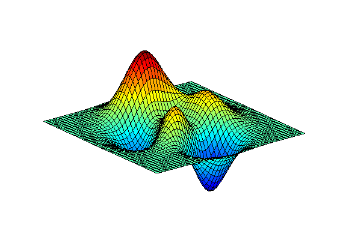

How to make an animated GIF
This example animates the vibration of a membrane, captures a series of screen shots, and saves the animation as a GIF image file.

The resulted animated GIF was embedded in this HTML page using the Image cell markup (see help for markup formatting).
Here's the M code.
Z = peaks; surf(Z) axis tight set(gca,'nextplot','replacechildren','visible','off') f = getframe; [im,map] = rgb2ind(f.cdata,256,'nodither'); im(1,1,1,20) = 0; for k = 1:20 surf(cos(2*pi*k/20)*Z,Z) f = getframe; im(:,:,1,k) = rgb2ind(f.cdata,map,'nodither'); end imwrite(im,map,'DancingPeaks.gif','DelayTime',0,'LoopCount',inf) %g443800
For more details about GIF settings DelayTime and LoopCount for desired effect see the help for imwrite/gif.